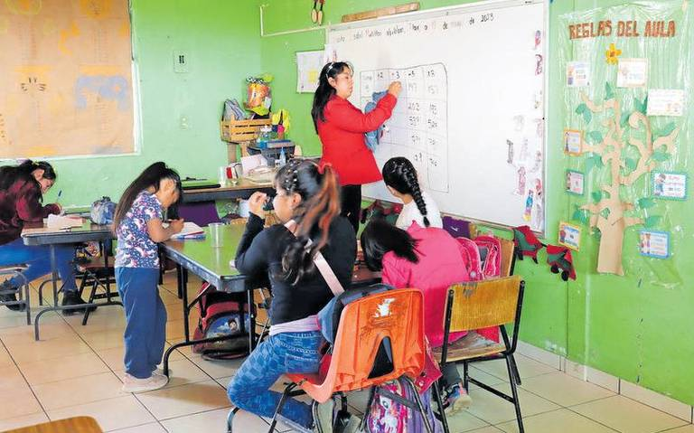

REZAGO EDUCATIVO EN TLAXCALA
La desigualdad educativa en Tlaxcala se caracteriza por los desafíos en el acceso y la calidad. Factores como la falta de infraestructura, los recursos limitados y la desigualdad socioeconómica contribuyen a este problema. Aunque el gobierno está trabajando en estrategias para mejorar la educación, persisten obstáculos significativos.
La educación es un derecho fundamental y un pilar para el desarrollo de cualquier sociedad. La lucha contra la desigualdad educativa en Tlaxcala es una tarea urgente que requiere la atención y el compromiso de todos. Solo a través de esfuerzos conjuntos y sostenidos será posible garantizar que todos los niños y jóvenes tlaxcaltecas tengan acceso a una educación de calidad, sin importar su origen socioeconómico. La tarea es grande, pero el futuro de la educación en Tlaxcala depende de las acciones que se tomen hoy.
Los niños, adolescentes y jóvenes que acuden a escuelas en comunidades tienen mayor desventaja tanto social como económica, debido a factores como la pobreza, el analfabetismo, el trabajo infantil e incluso la baja escolaridad de sus padres. Otro obstáculo importante es la falta de infraestructura y material para estas escuelas, ya que el estado no brinda los recursos necesarios para que los estudiantes reciban una educación de calidad. Esto resulta en una formación desigual, con bajos logros de aprendizaje y, en muchos casos, el abandono definitivo de sus estudios.
De acuerdo con El Sol de Tlaxcala, fueron tres mil 218 tlaxcaltecas los que concluyeron sus estudios de nivel básico entre 2021 y 2022. Del total de esta población, son 57 mil 496 personas las que no cuentan con primaria concluida. El problema se agrava en secundaria, con 167 mil 938 tlaxcaltecas que no cuentan con el certificado de este nivel educativo.
En un panorama educativo alarmante, los municipios con mayor población que no recibe educación básica son Zitlaltepec con 46.71%, seguido de Terrenate (41.11%) y El Carmen Tequexquitla (40.56%). Se necesitan medidas urgentes para revertir esta preocupante problemática.
Referencias
El sol de Tlaxcala. (2023). Aminora el rezago educativo en Tlaxcala. Recueperado de: https://www.elsoldetlaxcala.com.mx/local/aminora-el-rezago-educativo-en-tlaxcala-10228811.html